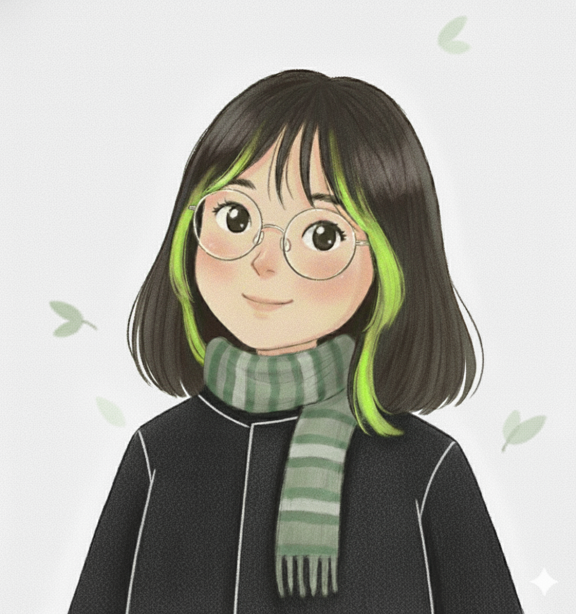

✨
# Wrenbear
Hi！
我是 yang
大三计算机在读， “理科生中的文科生”
希望融合理性逻辑与感性表达，
探索技术和艺术的交汇。
Light as a bird, strong as a bear.
爱好与技能 / Gallery

📸 摄影 / Photography

🎨 绘画 / Arts
Skills Bag:
#旅行
#阅读
#写作
#运营
#编程
#运营
#英语
······
正在探索... / Exploring
💻
前端开发
正在和同学一起开发一个“烈士公园活动报名”小程序小项目，尝试使用腾讯云开发解决线上活动报名问题。
🤖
AI 的运用
AI 辅助学习与工作，探索更多AI工具在日常生活中的应用可能性。
🗣️
英语口语
Oral English
🎬
运营与剪辑
Content Ops
🎸
电吉他入门
🏋️
力量训练&减脂
提高身体素质，增强体能与耐力。
And more to be written......